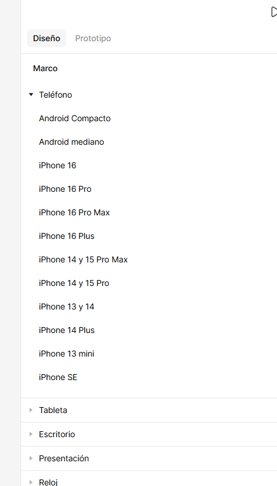

Documentación: Comandos de Figma
Guía profesional para el diseño de interfaces (UI/UX)
1. Selección y Manipulación
Comando: Move Tool

¿Qué hace? Selecciona, mueve y escala elementos en el lienzo.
Uso: Es la herramienta base para organizar capas.
Acceso rápido: V
Comando: Frame Tool
¿Qué hace? Crea contenedores (pantallas) con dimensiones predefinidas (iPhone, Desktop).
Uso: Para delimitar el área de diseño de cada vista.
Acceso rápido: F